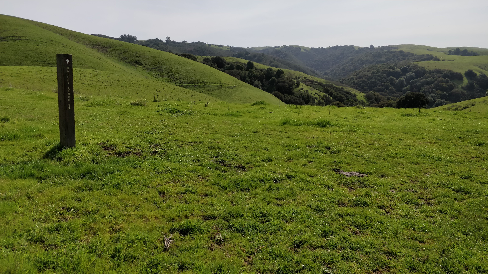
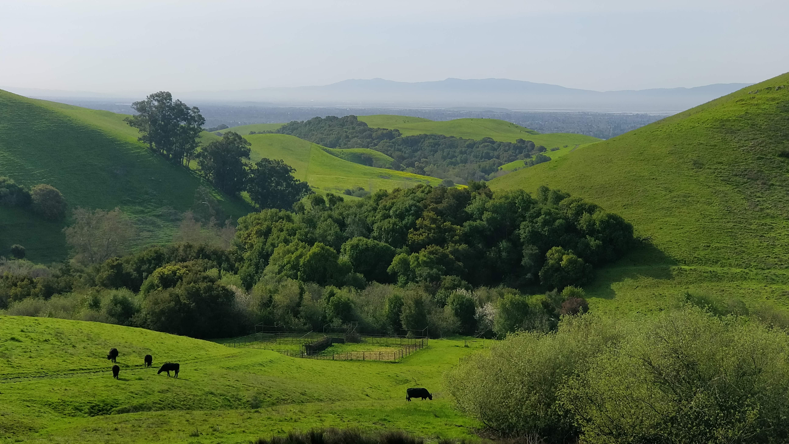

Garin regional park is one of the East Bay parks. It was the best place to see wild flowers blooming all along our path. For more information about the park visit their website. Extremely light on traffic early in the morning. People started coming late for a picnic with family. We saw hardly 10 people hiking in this huge park. They were all spread out. It was a peaceful hike with byfar the most number of sightings of animals/birds in a local hike in Bay area. We saw a lot of cows, by now we have concluded that we had underestimated the timid looking cows. We learnt our lesson to keep our distance from them. Apart from the cows, we also saw a bunch of turkeys on the way. As we came close to the end of our trail we also spotted 2-3 coyotes running from the top of the mountain to the bottom. We were 10ft away from the coyotes. That was fun !
- Where is it
”
- Best Time of the year to Visit: During Spring after the showers when meadows have turned green
- Best Time of the day to visit: The park opens at 8am. The park visitor center opens at 11:30am.

- Parking: Sufficient parking spots, not to worry
- Trail details:
- Trail name: Vista Peak Loop trail.
- Strenuous level: Moderate
- Total round trip: 4miles
- Things to keep in mind:
- Restrooms are only at the trailhead in the parking lot.
- Carry enough water to keep yourself hydrated
We started hiking at around 8am in the morning. A carpet of yellow wild flowers had been laid for us. Garin has some rustic metallic structures at the entrance, they were interesting.
 It is a bit easy to get lost while trying to find the Vista Peak Loop trail. You have to walk straight ahead from the parking lot, not entering into the main area.
It is a bit easy to get lost while trying to find the Vista Peak Loop trail. You have to walk straight ahead from the parking lot, not entering into the main area.
 The restrooms are found inside the park. But keep in mind the trail head is outside the park, next to parking lot.
We saw many people on the High Ridge trail which looked hard to me since the mountain was very steep. We chose a moderate hike but we didn’t realize that none would choose this trail and we would be alone on this trail.
More details on the hikes in the park can be found in this map
The restrooms are found inside the park. But keep in mind the trail head is outside the park, next to parking lot.
We saw many people on the High Ridge trail which looked hard to me since the mountain was very steep. We chose a moderate hike but we didn’t realize that none would choose this trail and we would be alone on this trail.
More details on the hikes in the park can be found in this map
{kind=link}
As you climb the peak, there will be boards pointing to different trails.  There is a pattern in the East Bay parks. They are all vast expanse of green meadows if you go during Spring. There are hardly any trees for shade. It may get hot during the Summer and I would imagine the grass would turn yellow making it even more difficult to hike. So the best time to hike is again during the Spring and it is undoubtedly our favourite season to hike.

Unlike the heavily crowded Mission Peak, I would say that the lightly treaded Garin Regional Park has all kinds of trails both easy and difficult. It is cut off from the freeways and extremely peaceful to get away for the weekend. Pack some food, picnic towel and chairs with family and friends. You will have get to relax after the hike and have some fun time. I will definitely make it a regular ritual to visit this place. Will you ? :)
Listen to this song for the brain while it is thinking whether to go or not. Bring out the child in you and have fun.